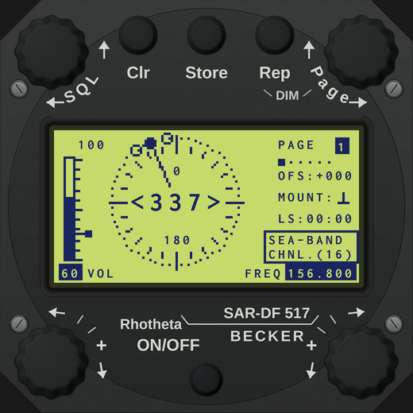
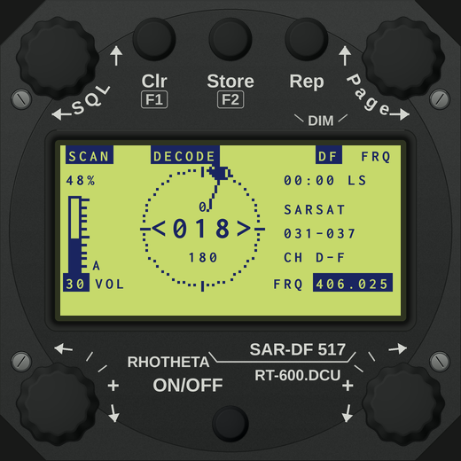
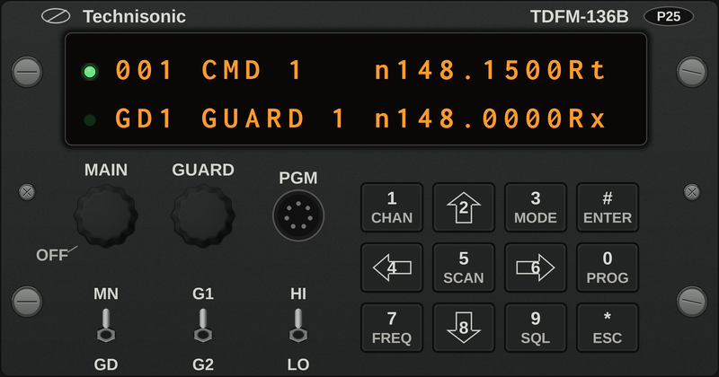
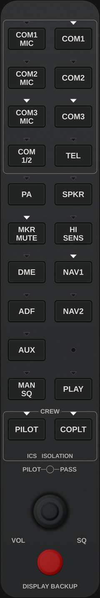

Dedicated Mission Observer Station Panel
Designed on a 1920×1080 canvas for multi-monitor simulator stations, touchscreen tablets, or Air Player LAN streaming to an observer's secondary laptop.

Becker SAR-DF 517 Station Panel
The primary electronic homing head across the Civil Air Patrol fleet. Monitored alongside the Garmin G1000 MFD and Garmin GMA 1347 audio panel.
- Display Cutout: Transparent region (196, 136, 787×592) allows popped-out X-Plane MFD windows or Air Player video streams to show cleanly behind bezel controls.
- Four-Band Homing: 121.500 MHz (VHF civilian), 243.000 MHz (UHF military), 156.800 MHz (Maritime CH 16), and 406.025 MHz (COSPAS-SARSAT).
- True Six-Page DCU: Page 1 Bearing & Spread, Page 2 360° Compass Rose, Page 3 406.025 MHz emergency burst decode, Page 6 adjustable frequency tables.

RHOTHETA RT-600 Modernization Panel
Replicates the modern multi-band Doppler DF system currently being fielded across upgraded CAP search airframes.
- Full 19-Channel 406 Grid: Seven pre-programmed CPSAR groups covering 406.022 MHz to 406.076 MHz in 3 kHz increments.
- Concurrent Dual-Band Scan (3.3.3): Automatically sweeps between assigned VHF civilian frequency (121.500 or 121.600 MHz) and UHF 406 MHz channels.
- Direct Hardware Rotary Control: Tuning, squelch thresholding, and page switching operable via mouse wheel, touch drag, or physical Knobster USB hardware.

Becker SAR-DF 517
4-band precision DF head with 128×64 LCD dot-matrix, spread bar, and COSPAS-SARSAT decode.

RHOTHETA RT-600
Modern Doppler DF with 19 COSPAS-SARSAT channels (CPSAR 1–7) and automated dual-watch sweep.

TDFM-136B Radio
VHF-FM tactical transceiver (136–174 MHz) with authentic 24×2 dot matrix display and 12-key pad.

Garmin GMA 1347
Observer audio panel with COM3 audio and COM3 MIC isolation, ICS intercom volume, and squelch.